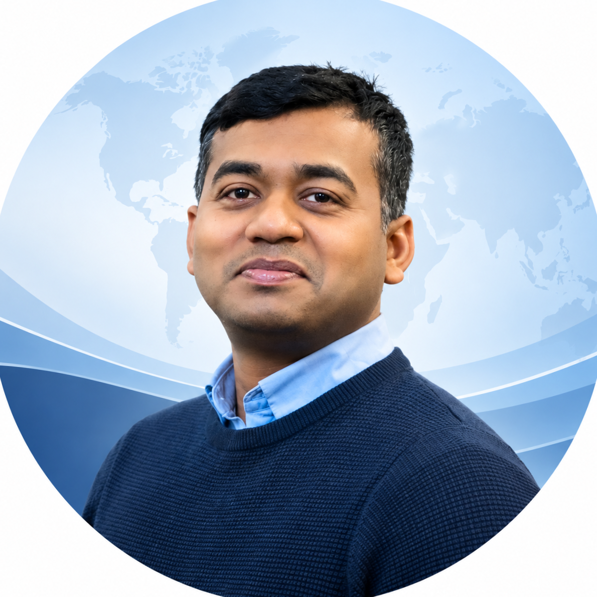

Erasmus Mundus Joint Master’s in Technology and Management for Circular Economy (IMATEC)
Technology track, with a focus on sustainable chemical and process engineering, circular economy and interdisciplinary technology development.
Mehdi Hassan Milu
Chemical Engineer | Erasmus Mundus Graduate | Circular Economy | Catalysis | Sustainable Process Engineering
I am an early-career researcher with an interdisciplinary background in chemical and process engineering, materials science, environmental chemistry and circular economy. My research experience spans catalytic methane oxidation, adsorption and environmental analysis.
“Life probably won't take you where you think you want to go, and that's ok.”
Explore my researchGet in touch
My academic journey has taken me through Hungary, the Czech Republic, Spain and Finland. I hold a BSc in Chemical Engineering and completed the Erasmus Mundus Joint Master’s in Technology and Management for Circular Economy (IMATEC), specialising in the Technology track.
My interests connect chemical engineering with materials development, environmental applications and sustainable industrial processes. I value collaborative research and practical approaches that translate scientific understanding into resource-efficient technologies.
Technology track, with a focus on sustainable chemical and process engineering, circular economy and interdisciplinary technology development.
Undergraduate education in chemical engineering and related process and engineering disciplines.
Investigated liquid-phase direct oxidation of methane to methanol using copper-modified microporous and mesoporous materials, including SBA-15, Al-SBA-15, MCM-41 and Al-MCM-41.
Studied europium and cobalt adsorption onto PET nanoplastics using batch sorption experiments and gamma spectrometry, exploring pH effects, kinetics and adsorption isotherms.
Worked on an analytical method for determining total cyanide in wastewater.
Students and Alumni unit coordination and engagement with the international Erasmus Mundus community.
Panel Coordinator at the European Parliament in Strasbourg.
Participation in the Ocean Technology and Maritime Engineering Summer School in Rostock and research events in Finland.
XRD, N₂ physisorption (BET), FTIR, UV-Vis, TEM, SEM-EDX, H₂-TPR, solid-state NMR, HPLC and potentiometric titration.
Batch adsorption, sorption kinetics and isotherms, gamma spectrometry, catalyst preparation and high-pressure batch reactor experiments.
OriginPro, QtiPlot, MATLAB, Excel, Power BI, Aspen Plus, ChemCAD and AutoCAD.
I welcome conversations about doctoral research, collaborative projects and opportunities in sustainable chemical and environmental technologies.
LinkedIn: linkedin.com/in/mehdi-hassan-milu
Email: Add your preferred professional email address here before publishing.